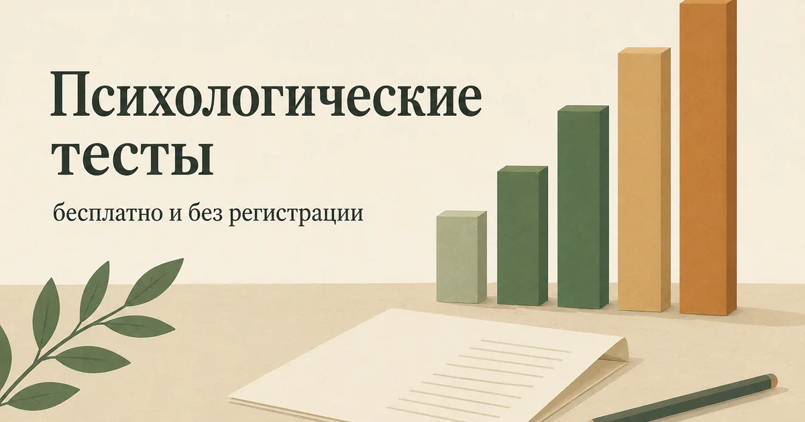

Главная → Тесты
Психологические тесты
Бесплатно · без регистрации · ответы не покидают браузер
Здесь собраны опросники, которыми пользуются врачи и исследователи, — без развлекательных «узнай свой психотип». Каждый тест — валидированная шкала в общепринятом виде, с честной расшифровкой и указанием источника. Результат считается прямо в браузере: мы не получаем и не храним ваши ответы.

Как читать результаты
Все тесты на этой странице — скрининги, а не диагностика. Скрининг отвечает на один вопрос: «есть ли здесь то, с чем стоит разбираться дальше». Он не называет диагноз, не различает похожие состояния и не учитывает вашу историю. Диагноз ставит человек — врач или клинический психолог — после разговора.
Отсюда два практических следствия. Высокий балл не означает, что у вас болезнь: он означает, что имеет смысл дойти до специалиста. Низкий балл не отменяет ваших переживаний: если вам тяжело, а тест показал «норму», ориентируйтесь на свою жизнь, а не на цифру — любая шкала спрашивает про ограниченный набор симптомов и легко проходит мимо остального.
Почему именно эти шкалы
Мы намеренно не публикуем популярные методики, которые распространяются по платной лицензии, — MBTI, тест Люшера, опросник выгорания MBI, шкалы Бека и Гамильтона. Их пункты защищены, и выкладывать их в открытый доступ некорректно. Вместо MBI, например, мы используем Копенгагенскую шкалу CBI: она создавалась как свободная альтернатива и проверена в исследованиях.
Каждая страница указывает первоисточник — оригинальную публикацию, в которой шкала была представлена и валидирована. Формулировки и границы диапазонов мы не меняем: если инструмент подстроить «под себя», он перестаёт быть инструментом.
Прошли тест и не знаете, что делать с результатом? Расскажите, что происходит, — анонимно, без регистрации и в любое время суток.
Поговорить бесплатноЧто почитать по теме
К каждому состоянию у нас есть подробный разбор: что это, почему возникает, что делать сейчас и когда идти к врачу. Начать удобно с полного гида по тревоге или сразу открыть каталог статей.
Материалы подготовлены командой AI Therapist. Мы приводим шкалы в общепринятом виде, без изменения формулировок и границ диапазонов, и указываем первоисточник на каждой странице. Раздел носит просветительский характер, не является диагностическим заключением и не заменяет консультацию врача или клинического психолога.
Кто отвечает за содержание сайта и по каким правилам мы готовим материалы — на странице о проекте.